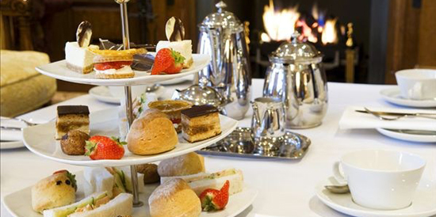
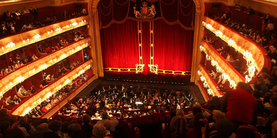
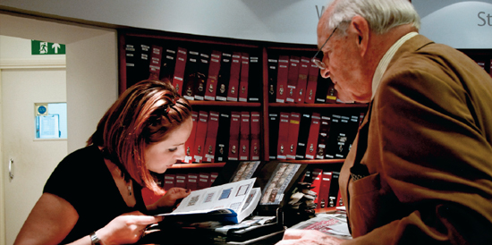
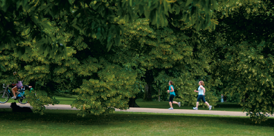
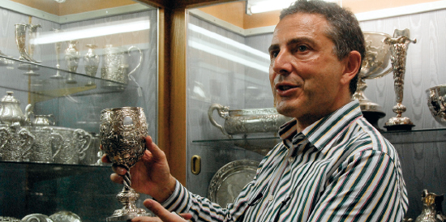
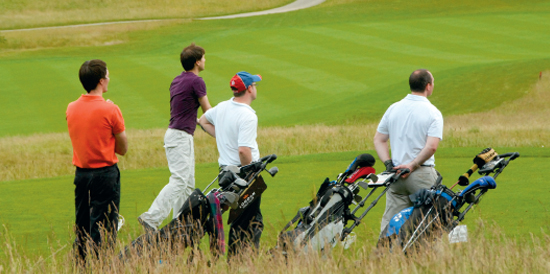

英国时装周活动Fashion Week
做为一个时尚人士，KOL当然不会错过一年一度的英国时装周。无论是在T型台上，还是在城中的著名餐厅、酒吧、夜总会或是大街上，整个城市都在进行精彩的服装展示。驾驶着喜爱的XF轿跑，穿行于伦敦街头，满眼都充斥着活力与创意。在这段特别的日子里，整座城市都散发着时尚的味道。
伦敦设计酒店品英式下午茶CitizenM hightea
无需烦恼于伦敦拥堵的街道，酒店门前的绅士，会为你提供贴心的停车服务，让你毫无后顾之忧的品尝到最道地的英式下午茶。英式下午茶是英国人创造的一种经典饮食文化，它与捷豹八十余载的品牌旅程非常吻合。引领世界奢华潮流，成就经典无数，这二者绝对都是历代名流雅士的宠儿。
英国皇家歌剧院Royal Opera House
英国皇家歌剧院，伦敦最负圣名的老牌歌剧院。从1858年直到现在，除了两次世界大战期间有过中断以外，每年都在特定的伦敦“演出季”时间里推出歌剧作品。1892年，科文特花园剧得到了“皇家歌剧院”的荣誉称号这期间，享有国际声誉的艺术家门，纷纷来此登台献艺，剧院也跻身于世界一流歌剧院之列。被法国大作曲家德彪西曾称之为能代表英国人最优秀的一面，不但装修富丽堂皇，而且音效尽善尽美。在英国人的创造下，已经成为一个新旧交融的现代时尚生活空间。在皇家歌剧院看次歌剧绝对是很特殊的经历。
收集世界珍邮Stanley Gibbons
虽然现在大家写信多用Email了，但集邮依旧是英国绅士的一大文雅爱好。由英国著名邮商斯坦利 • 吉本斯（Stanley Gibbons）创办的吉本斯邮票公司是全世界最古老的一家邮票公司，其创编的《吉本斯邮票年鉴》出版至今，已成为全球著名的邮票目录。在位于伦敦史翠德街的吉本斯邮票门店，你不仅可以在五花八门的海量邮票中尽情挑选，还能见识到许多珍贵邮品和历史文件，如全世界第一枚邮票“黑便士”，亨利八世、爱德华四世、维多利亚女王御笔签名的文书，爱因斯坦的亲笔信，李小龙做笔记的功夫书等等——如果你是个口袋殷实又有眼光的收藏家，不妨考虑挑选一两件进行投资。
皇家园林晨练Morning Exercises
幸好在伦敦你不是一个上班族，不必一大早挤地铁赶公交，而是有暇在享用了丰盛的早餐之后，悠悠然踱步到绿意盎然的大公园里呼吸新鲜空气。伦敦市中心的几大皇家园林堪称全世界最美丽的公园，尤其在早晨，空气清新，鸟语花香，光瞅瞅这满眼的绿色就让人心旷神怡。在海德公园的落叶大道上跑跑步，在肯辛顿花园的草坪上舒展筋骨，美好的一天就此开始。
古董银器店淘宝London Silver Vaults
英国人的生活优雅精致，讲究情调，在其考究的生活用具上就可见一斑。精美的银器曾是许多贵族家庭的生活必需，如今依旧是不少追求生活品位的富裕阶层喜好的收藏品。LondonSilver Vaults是伦敦最大的古董银器集中地，内有三十多家经营古董银器的店铺。在这里，你可以淘到精美的银质餐具、来自18世纪中国的古董银器，甚至还有一副硕大的用纯银打造的国际象棋——当然，得花巨多的银子购买。
绿茵挥杆Golf
在颇具贵族气质的伦敦，自然少不了高尔夫这项独具魅力的“贵族运动”。高尔夫球普遍被认为是苏格兰人的发明，被视作英国国粹。距伦敦市中心1小时车程的伦敦高尔夫俱乐部(London Golf Club)，是城中绅士们切磋球艺、会友休闲的好去处。在伦敦打高尔夫，你要习惯如孩儿脸般变幻莫测的天气，一场球里时晴时雨是常有的事儿。在阳光绿草间激战正酣，突然就大雨倾盆起来，你也不用介意，顶多和球友相视一笑：“天气真坏，是不是？”